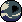

Welcome to the DTNE Manual
Where world information is frequently explained. Please stay tuned, as this keeps being updated, so keep
checking out the information. ♡

The basics!
In the Deathenize solar system, there are at least a total of 7 categories that species, realms, and
universal arbiters are divided into. Starting off with the 5 realms:
Let's talk about the definition of Realms...
-The World traits
- The Society and culture
- Technology
- Species and their traits
Realms in Deathenize are like portal worlds. Each of these has its own set of rules and traditions. In each
realm, there's at least 5 topics that are discussed:
It is important to keep these in mind when talking about the world-building of the realms, as they gather
both silly and important information.
 The Earthkin Realm
The Earthkin Realm
Also called: Humans, Earthdwellers, The Kins/EK

A human-like realm with nature and physics similar to the human world, as well as earth-like creatures that
roam the land.
The Eldericth
Also called: The Elts, Earthdwellers, Els

Weird, morbid creatures akin to Lovecraftian horror, like species. They could look quite humanoid or
monstrous.
The Cryptids
Also called: Cryptics

Similar to Eldritch with weird differences, where their world might operate a bit differently. They are more
based on cryptids rather than Lovecraftian beings. And as well as weird corish species live there as well.
The Mythicals

Also called: Humans, Earthdwellers, The Kins/EK
Species based on myths, fairy tales, and dreams alike, mostly inhabited by humanoid animal-like and fantasy
creatures such as elves and gnomes.
The Ethereals
Also called: The Eths, Angels, The Skydwellers
Accurate angel-like species and beings made of solar flare, fire, or light. They prefer to live up high in
the skies.
So about universal balancers, their like realm creators or transporters
 The Universal Balancers
The Universal Balancers
Also called: The keepers
In power of the wheel of fate, they are in control of all timelines. Fate, past, and future are in order.
They are also creators of the 5 realms (each one has its own realm). But there's a strict rule that they must
follow, and that is that they are not allowed to interfere with particular activities unless something strange
comes up — things that are not supposed to happen or events that need fixing after being spoiled with, for
example. Time decides what takes place, and time decides who survives and who ends up being crushed.
 The Wicked
The Wicked
They are the polar opposite of the Universal Balancers, disagreeing on how things operate. They were either
abandoned, betrayed, or turned corrupted. The motives for them differ. Each of them also has a realm (shared
with the Universal Balancers). They often try to disrupt time or fate, either to toy with it or due to a
disagreement on when something happens. In their own section, more of the category shall be discussed, as well
as the particular species that inhabit the world.